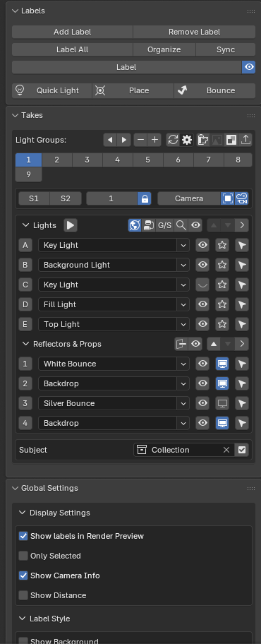
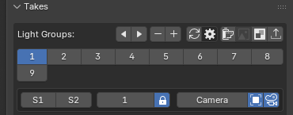
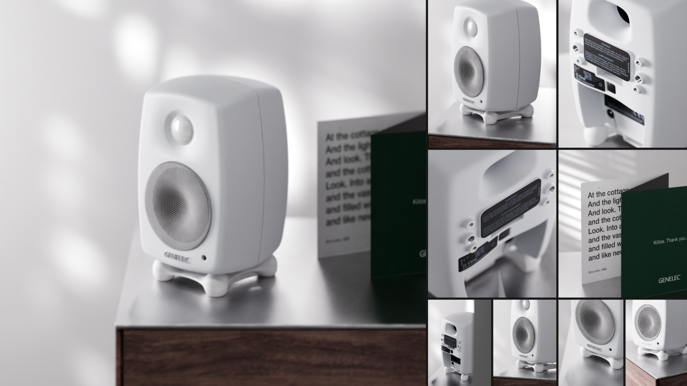
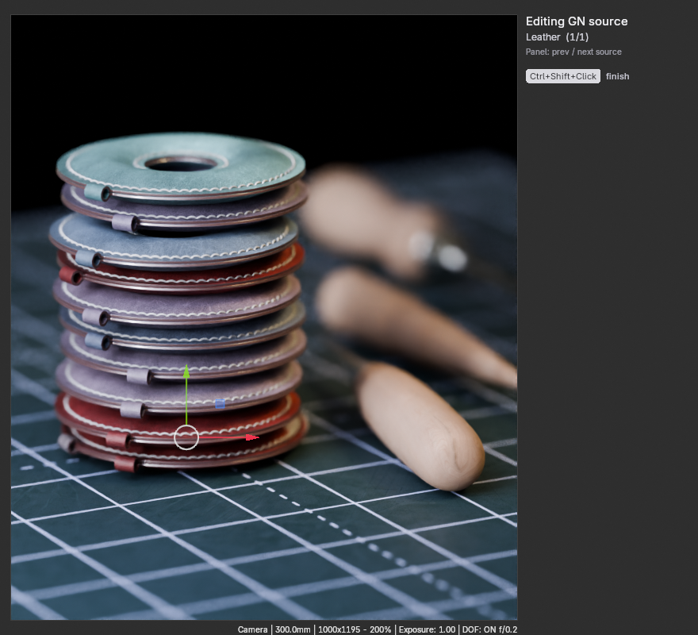
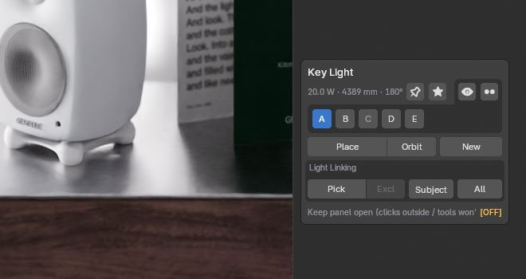
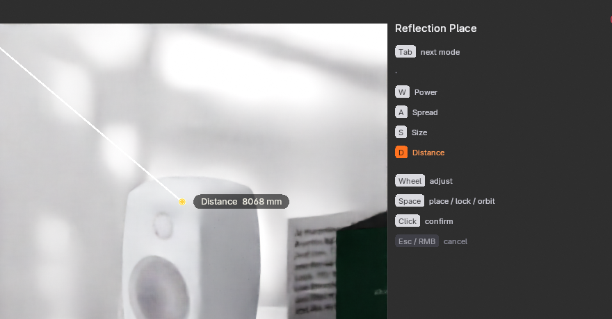
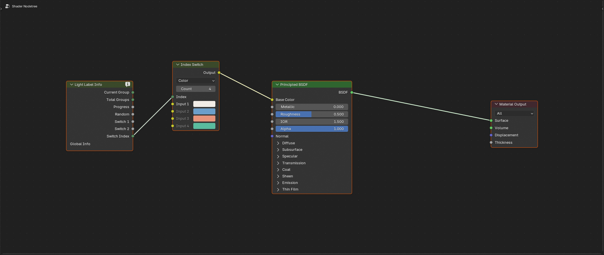

Light Takes — User Manual
Version 2.0 · Blender 4.2 LTS+ · All panels live in 3D View → Sidebar (N) → Light Takes
1. Core Concepts
| Term | Meaning |
|---|---|
| Take | A complete lighting setup: light positions & parameters, visibility, reflector materials, world state, render resolution — and optionally its own camera. Click a take button to apply it instantly. |
| Label | What makes a light/reflector "managed" by Light Takes. Labeled objects show viewport name tags and are tracked per take. |
| Global (G) | A labeled light that exists in every take, with independent parameters per take. |
| Solo (S) | A labeled light that belongs to specific takes only; it is hidden and listed as (Inactive) elsewhere. |
| Subject | An optional collection whose objects' state (visibility, transform, materials) is also snapshotted per take. |
2. Install & Upgrade
- Install: Edit → Preferences → Get Extensions → ⌄ → Install from Disk… → choose
light_takes-x.x.x.zip. (Legacy Add-ons tab works too.) - Upgrade from 1.x (Light Labels): install, restart Blender, open your file. Migration is automatic — the console prints
migrated N legacy node(s)andstate data migrated to schema v2. Save the file once and migration never runs again.
3. Quick Start
- Open the Labels panel → select your lights → Label All
- In Takes, press ＋ to create Take 1. Light your scene.
- Press ＋ again — the current setup is copied. Relight: that's Take 2.
- Select a camera, click the 📷 icon to bind it to the current take (optional).
- Click take buttons to compare. Render All renders everything + a contact sheet.

4. Labels Panel
| Button | Action |
|---|---|
| Add Label / Remove Label | Label or unlabel the active light/reflector. Reflectors get a role (Silver Bounce, Diffusion, Backdrop…) which auto-assigns a preset material and display mode. |
| Label All | Labels every unlabeled light with its object name. |
| Organize | Moves labeled lights, reflectors and cameras into a tidy collection hierarchy (# Lights, # Reflectors, # Cameras). |
| Sync | Renames objects to match their label names. |
| Label / Info / Combined | Cycles label display: name only, live parameters (power · color · size/angle), or both. |
| 👁 | Master toggle for all viewport labels. |
5. Takes Panel
Header toolbar
| Icon | Action |
|---|---|
| ◀ ▶ | Move the active take left/right. Take data follows automatically. |
| − / ＋ | Remove (with confirmation — all states in that take are lost) / Add. Adding copies the current take's setup. |
| 🔄 | Sync everything from the selected object to all other takes (see §6). |
| ⚙ | Opens the custom-sync popover. |
| 🎬 (Render) | Batch render dialog (§7). |
| 🖼 (Image) | Re-roll the contact sheet from the last batch (§8). Disabled until you have rendered once. |
Click any numbered button to switch takes. Editing anything marks the take dirty; it is saved automatically when you switch away or save the file.
Per-take switches
| Control | Meaning |
|---|---|
| S1 / S2 | Two booleans stored per take, exposed as Switch 1/2 outputs of the Info node (§12). Use them to toggle material/GN effects per take. |
| Switch Index | An integer exposed as the Switch Index output — e.g. drive an Index Switch node to pick a backdrop color per take. |
| 🔒 | Locked = one global index shared by all takes; unlocked = each take stores its own. |
Camera binding
Each take can own a camera. Select a camera and click 📷: the take now stores that camera's position, rotation, lens, shift and DOF (including focus distance and f-stop). Switching takes moves/switches the camera accordingly. Click again to unbind; with a different camera selected, the icon becomes 🔁 and clicking rebinds. The camera name button focuses the view on it. The DOF icon toggles depth of field and places the focus empty.

Lights / Reflectors lists
Each row, left to right:
- Letter button (A, B, C… / 1, 2, 3…) — matches the viewport tag; click to hide/show that label.
- Name field + role dropdown. With Expand (header ▾) on, rows show live energy/color/size sliders instead.
- 👁 hide/show the object — the all-in-one toggle that flips Eye + Monitor + render together, same as V (see §9).
- ⭘ (Solo icon) — lights only: isolate this light (all others off); the row turns into quick energy/size sliders while isolated. Shift+Click also disables the world environment for the duration (restored on exit). Note: re-enabling the environment re-samples the world, which can lag with large HDRIs — so it is opt-in per click, not automatic.
- G / S — only visible when the G/S header toggle is on; see below.
- Select arrow — selects and frames the object; for lights it also opens its node tree in an open editor.
Header row extras: ▶ Cycle Show (animated light-by-light walkthrough; ONE = one at a time, ADD = cumulative; Move/Hold times in Global Settings), 🌐 world on/off, node-editor jump, eye-all toggle, ▲▼ reorder, and the lists for Reflectors & Props below.
Global / Solo (G/S)
- Turn on the G/S header toggle to show the mode column.
- Click G on a light → it becomes Solo, active only in the current take; other takes show it as (Inactive).
- On a Solo light, S toggles whether it is active in the current take.
- Shift+click restores the light to Global everywhere.
Subject collection
Appears when you have 2+ takes. Pick a collection, click ＋ to mark it as Subject, then tick the checkbox to enable snapshots. From then on the objects inside have their visibility/transform/materials stored per take. (Two deliberate steps: marking and enabling are separate.) Disabling warns you that per-take positions collapse to the current take.
Shortcut: right-click a collection in the Outliner → Set as Light Takes Subject (mark only) or Set as Subject & Enable Snapshots (the one-click version). If a collection is already the Subject but not yet enabled, the menu instead offers Enable Subject Snapshots.
Per-take parameters
Beyond transform/visibility/materials, you can make almost any property store an independent value per take. Right-click the property → "Assign to Light Take" — a shape-key value, a modifier setting, an object custom property, and so on. From then on each take keeps its own value and restores it on switch; editing under one take never bleeds into another. No drivers, no keyframes — the value lives in its normal place, the take system just snapshots and restores it.
| Point | Detail |
|---|---|
| What can be assigned | Numeric, color and boolean properties on a labeled light/reflector or a Subject-collection object. The value must live on the object (or its data/shape-keys/modifiers). |
| Each take is independent | When you assign, every take is seeded with the current value as its own starting point — so unused takes don't silently inherit a neighbour's value. |
| Per-Take custom properties | In the manager, ticking Per-Take when adding a property prefixes it with P_ — the same mechanism, handy for an integer that drives an Index Switch (§12). |
Managing them: Extras → Per-Take Parameters opens a popup listing every assigned parameter with an inline value field and a per-row ✕ to unassign. Properties that no longer resolve (the shape key/modifier was renamed or deleted) show as (missing); clear them per-row or with Purge (§14). Cleanup is always manual on purpose — a rename looks identical to a deletion, so the add-on never removes a binding automatically.
Reference changes — "Fix Other Takes"
Each take stores an object's local position/rotation/scale. A few Blender operations don't move an object — they redefine the reference frame that position is measured from (its origin, or its parent). Do that in one take and the other takes still hold the old numbers, so the object jumps to the wrong place when you switch to them. Light Takes detects this and offers a one-click fix that corrects every other take.
| Breaks the other takes | Safe — nothing to fix |
|---|---|
|
|
Why the right column is safe: those keep the object's world position (e.g. Keep Transform sets a parent-inverse that cancels the parent), so every take's stored numbers still resolve to the right spot.
How you're reminded — and how to fix. There is no constant panel warning (just like Blender never nags you to press Ctrl+A). A pending break surfaces only in two places, only when one actually exists:
- Switching takes pops a small dialog — "Reference changed… ☑ Fix other takes" with a Switch button. Leave the box ticked and press Switch to fix every other take and switch; untick it to switch without fixing; press Esc to stay put.
- "Fix Other Takes" sits in the Ctrl+A (Apply) menu — your habitual "apply" spot. It is greyed out until something is actually broken (so you can't misclick it), and clicking it fixes the other takes and stays on the current take.
Example. A prop sits in a different spot in Take 1 and Take 2. In Take 1 you run Set Origin → Origin to Geometry. Open Ctrl+A and Fix Other Takes lights up — or just click Take 2: the dialog appears, press Switch (Fix ticked). Both takes keep their own position; nothing jumps.
Scope: Subject-collection objects and Reflectors. Not auto-detected: Set Origin on a parent object (children shift passively), and Apply Rotation/Scale.
6. Syncing Between Takes
Main 🔄 button: copies everything about the selected object(s) to all other takes — the "make this consistent everywhere" hammer.
⚙ Custom sync popover: choose what (Everything ↔ Material / Visibility / Transform / Light Props — mutually exclusive with Everything) and where (All Other Groups / All Except… / Only Selected, with per-take checkboxes), then press Run Custom Sync.
Align to Take Reference (a temporary position clipboard)
Sync pushes from the source take to all/chosen takes — targets decided up front. Take Reference is a lightweight pull tool: mark one reference position, then align whatever you're looking at to it — a different object, or the same object in another take. Like "set a reference, then align elements to it".
- Mark as Take Reference — right-click an object → its current world position becomes THE reference. There is one shared, temporary slot (nothing is written into the object or the .blend); re-mark to replace it.
- Align to Take Reference — select any object(s) → Ctrl+A (Apply) → Align to Take Reference matches them to the reference. The redo panel has independent Location / Rotation / Scale toggles (Blender-style) — Location only by default, tick any combination. Only the current take changes. The entry is greyed until a reference has been marked.
7. Batch Render
Render All Groups renders every take to //<subfolder>/ next to your .blend, named {file}_{01..NN}. Options: resolution preset buttons (50/75/100/125%) or custom %, output subfolder, open-folder-after, and the Contact Sheet block (§8). Press Esc anytime to cancel; original settings are restored. Existing files are overwritten (the dialog warns you).
8. Contact Sheet
Generated automatically after a batch render (toggle in the dialog), saved as {file}_contact_sheet.png in the output folder. Colors match your renders exactly.
| Layout | Behaviour |
|---|---|
| Masonry (Long) | Pinterest-style vertical sheet. No cropping. Columns = 1 gives a clean top-to-bottom strip. |
| Fill (Mosaic) | Covers the canvas completely at any image count. Cells stay close to each image's aspect; cropping is center-weighted. |
| Hero | Take 1 large on the left, the rest fill the right. Put your lead option first. |
- Sheet Width (total px) and Gutter (gap px) apply to all layouts.
- Canvas Ratio (Fill/Hero): 16:9 · 3:2 · 4:3 · 1:1 · 4:5 · 9:16.
- Front Bias (Fill/Hero): 0 = equal cells; higher values give earlier takes bigger cells — detail shots shrink proportionally.
- Re-roll (🖼 in the Takes header): regenerates a different well-composed layout from the same renders — no re-rendering. You can change any option in its dialog. Output is numbered
…_v2, _v3; nothing is overwritten.

9. Visibility Tools
Blender has three visibility flags per object: the Eye (Hide in Viewport, H/hide_set), the Monitor (Disable in Viewports, hide_viewport) and the Camera (Disable in Renders, hide_render). The addon's own controls — V, the list 👁, the Quick Light Hide button — are an all-in-one toggle that drives all three together, so “show” really means visible in the viewport, the Rendered preview and the final render. The raw native icons stay independent (see the escape-hatch tip below).
| Key | Where | Action |
|---|---|---|
| V | 3D View / Outliner | All-in-one toggle for the selection: flips Eye + Monitor + render together. Direction is “hidden on any axis ⇒ next press shows”, so it reveals an object that only the native Eye was hiding — which a Monitor-only toggle could not. |
| Alt+V | 3D View / Outliner | Show absolutely everything scene-wide — clears Eye, Monitor and render on every object (Alt+H plus render, in one key). |
| H (native) | 3D View | Blender's own Eye hide — touches only the Eye axis (viewport + Rendered preview, not F12). It is captured per take like any other axis — see the table. |
What each control touches:
| Control | 3D viewport | Rendered preview | F12 final render | Stored in take |
|---|---|---|---|---|
| V / list 👁 / Quick Light Hide | hidden | hidden | hidden | ✅ yes |
| H (native Eye, on its own) | hidden | hidden | renders | ✅ yes (Eye axis) |
| nothing hidden | shown | renders | renders | — |
Each take snapshots all three axes independently and restores them on switch — so Take A can have an object hidden (by any axis) while Take B shows it, and flipping between them just works; you never re-hide by hand. The H row is worth knowing: a lone Eye hides the object from the viewport and the Rendered preview but not from F12 — so it can “vanish from preview yet still render.” If that ever surprises you, select it and press V: its direction is “hidden on any axis ⇒ show,” so it clears a stray Eye even when the Monitor flag was already on — no scattershot Alt+H.
hide_viewport works on objects that aren't in the active view layer (e.g. inside a Subject or Edit-Source collection), where hide_set() silently fails. Takes restore all three axes, but the Eye is best-effort and the Monitor flag is what always “sticks.”.blend): hidden in the viewport and Rendered preview while their Monitor/Camera icons say “shown,” reappearing in F12. Switching takes now heals these automatically (old snapshots had no Eye value, so the Eye is realigned to the Monitor state on apply). To clear one immediately, select it and press V (or Alt+V scene-wide), then save.10. Edit Source — fix things where they live
Collection instances
Ctrl+Shift+Click a collection instance (3D View object mode or Outliner): the source collection is enabled, the instance hidden, and you edit the real objects. The orange banner shows where you are; nesting works (instance inside instance) with a breadcrumb. Click the gesture again (or the ✓) to step back out — everything is restored. Auto Isolate additionally enters Local View.
Geometry Nodes sources
Ctrl+Shift+Click an object whose Geometry Nodes reference other objects/collections (Object Info, Collection Info, exposed inputs — nested groups included):
- 1 reference: enters it directly.
- 2–10: a picker lists each source with the node it comes from, plus Edit All Sources.
- >10: a searchable popup.
- Repeat use: the shortcut jumps straight to the last source you edited on that object; the panel button always shows the full picker. ◀ ▶ in the panel pages through sources without leaving the session.
Collections are revealed shallow: only their direct members appear. If a member is itself a collection instance, Ctrl+Shift+Click it to drill deeper (the two systems chain). Exiting restores every visibility flag — including excluded parent collections — exactly as they were.

11. Fast Light Tools
Three tools for placing and shaping lights quickly. All act on the active light (or the one you pick); none are tied to takes, so they work anytime.
Quick Light (Shift+Q)
A compact panel opens at your cursor. Pick a light with the A / B / C buttons (each shows its colour; a green dot means it has light linking; dimmed = hidden); the top shows the light's name and power/size. Then act — the panel closes when you launch a viewport tool, and stays open for instant toggles so you can see the result:
| Group | Buttons |
|---|---|
| Placement | Place / Adjust (Reflection Place, §11.2) · New (create a light in the same style and place it) |
| Light Linking | Pick / Subject / All (§11.3) |
| Toggles | Solo (same 3-state logic as the list; Shift-click = back to Global) · Isolate (Shift-click = also disable environment) · Hide — each shows its current state |
Drag the panel's empty area to move it; click outside, press Esc, or hit Shift+Q again to close. Buttons that need a visible light (Place/Adjust/Pick) are greyed out when the light is hidden.

Reflection Place (Ctrl+Alt+R)
Hover a surface; the active light is positioned so its specular highlight lands under the cursor (the light aims along the view ray reflected about the surface normal). Motion is smoothed so it feels fluid, not jumpy.
| Input | Action |
|---|---|
| Mouse | Re-aim the highlight to the surface under the cursor |
| Tab / WASD | Choose what the wheel adjusts: Distance / Power / Size / Spread |
| Wheel (Shift = fine) | Adjust the active value |
| Space | Lock aim — freeze orientation, dolly distance only |
| Click / Esc | Confirm / cancel |
The on-screen banner always shows the current mode and keys. Adjust in Quick Light launches this tool with aim already locked.

Light Linking (Cycles / EEVEE Next)
Make a light affect only the objects you choose. Each light gets its own private receiver collection behind the scenes, so editing one light never touches your real collections. Three actions (from the list, Quick Light, or operators):
| Action | Effect |
|---|---|
| Pick | Modal viewport picker: click objects to toggle whether the light affects them. Linked objects are boxed in green; hover shows yellow (will link) or orange (will unlink). RMB/Esc finishes. |
| Only Subject | Light affects exactly the Subject collection's objects. |
| All | Clear linking — the light affects everything again. |
12. Node System
All nodes live in Add → Light Takes (Shader editor; the Geo logic node in Geometry editors).
Light Takes Info
| Output | Value |
|---|---|
| Current Group | Active take number (1-based) |
| Total Groups | Take count |
| Progress | 0→1 across takes (great for gradients) |
| Random | Stable random per take |
| Switch 1 / 2 | The per-take S1/S2 buttons (0/1) |
| Switch Index | The per-take/global index (§5) |
Light Label Logic (+ World / Geo variants)
Outputs Match = 1 when the active take is one of its targets. Set the Targets count, type take numbers into the Target sockets — or select the node and click take buttons in the node editor's sidebar panel. The World variant works inside world shaders; the Geo variant outputs a boolean.
Index Switch / Global Palette
Index Switch routes one of up to 8 inputs (Float/Vector/Color/Shader) by index. The index source decides the scope:
- Feed it the Info node's Switch Index / Current Group → the choice follows the take (same for every object).
- Feed it an Attribute (Object) node reading an object property → the choice follows the object. This is how 100 objects can share one material yet each pick a different variant — and if that property is
P_(§5), per take too. (The Per-Take Parameters manager's Insert Node wires this for you.)
Global Palette manages a set of colors shared across materials, with randomize/algorithm tools in its sidebar panel.

Recipes
Concrete wirings for the most common request — "this value should follow the take". The walkthrough uses a world HDRI rotation, but the same patterns apply to any float, color or vector.
Rotating the environment per take. Wire the value into a Mapping node's Rotation Z ahead of the Environment Texture. Mapping rotation is in radians (30° ≈ 0.5236) — either type radian values directly or put a Math (Radians) node before the Mapping. Pick the pattern by how many different angles you need:
| Angles | Wiring |
|---|---|
| 2 | One Logic (World) + one Mix (Float). Put the takes that use the second angle into the Targets, wire Match → Factor, first angle into A, second into B. |
| 3–4 (several takes share an angle) | One Logic (World) node per angle, each listing its takes as Targets. Multiply each Match by its angle (Math ×), then Add the branches together. |
| One per take | Info node's Current Group → Index Switch (Float), one input per take — see above. |
Example of the multiply-and-add pattern — takes 1–3 share 30°, takes 4–5 use 90°, take 6 uses 210°:
Logic A [Targets: 1 2 3] Match ── × 30° ──┐
├─ Add ─┐
Logic B [Targets: 4 5] Match ── × 90° ──┘ ├─ Add ──→ Radians ──→ Mapping Rotation Z
Logic C [Targets: 6] Match ── × 210° ─────────┘
Math (Add) takes two inputs, so summing N branches chains N−1 Add nodes — the order doesn't matter.
Why plain addition works: each take number appears in exactly one Logic node, so at any moment a single Match is 1 and the rest are 0. The multiply acts as a gate — the "off" branches contribute 0 — and the sum is exactly the active take's angle.
The same patterns elsewhere:
- Enable something only in certain takes — Logic Match → Mix Shader Factor in a material (e.g. an emission plane that lights up only in takes 2 and 5), or multiply Match into any strength/value socket.
- Per-take backdrop color — Info Current Group (or a per-take Switch Index, §5) → Index Switch (Color), as in the screenshot above.
- Gradient across takes — Info Progress → Color Ramp: 0 at the first take, 1 at the last, so the whole take sequence sweeps the ramp.
- Per-object variants under one material — Attribute (Object) → Index Switch, see the tip above; make the property
P_for per-take control.
13. Light Presets
With a light selected, the panel lists presets matching its type. 💾 saves the light's complete node tree as a preset; click a preset to apply; 🔧 enters edit mode for rename/delete; 🔄 resets the light's nodes to default. Preset folder is configurable in Preferences.
14. Extras
- Adjust Camera — interactive focal length & dolly distance; see §14.2 below.
- Adjust F-Stop — interactive depth-of-field focus & aperture; see §14.1 below.
- Interactive Resize — drag the camera frame to change render resolution; see §14.3 below.
- Per-Take Parameters — manage object custom properties (batch-add, edit across every object that carries one, mark Per-Take, Insert Node to wire an Attribute→Index Switch) and every Assigned Parameter from §5 in one popup.
- Clear Material Slots — strip all slots from the selection.
- Purge — housekeeping for the take data: removes saved entries for deleted objects and assigned parameters that no longer resolve, across all takes. Manual, reported, and undoable; the Subject collection is left untouched when it isn't currently resolvable. Debug Info reports how many of each are waiting.
14.1 Adjust F-Stop — DOF Focus (Ctrl+Alt+F)
Sets the active camera's depth of field by hand. On launch it enables DOF if it was off, binds a DOF_Focus empty as the camera's focus object, and drops you straight into grab mode — so moving the mouse repositions the focus point and the image refocuses live. The wheel rides the aperture at the same time. Runs from anywhere (Ctrl+Alt+F); the focus empty is hidden again when you finish.
While the tool is active it switches the viewport to Face snapping (closest) automatically, so the focus point lands right on the surface under the cursor instead of floating in space. Your own snap settings are saved on entry and restored the moment the tool ends — so this never leaves snapping toggled on behind your back.
| Input | Action |
|---|---|
| Mouse (Move) | Reposition the ⦿ focus point — the camera refocuses to it live |
| Wheel | f-stop / aperture, in 0.1 steps (clamped f/0.1 – f/32) |
| LMB | Confirm |
| RMB | Cancel |
A readout pill beside the marker shows the live f-stop and the focus distance from the camera, so you don't have to leave the viewport to read values; a hint banner lists the keys. Because a take's bound camera stores focus distance and f-stop (§5), the DOF you dial here is saved with the take and restored when you switch back.
14.2 Adjust Camera — Focal Length & Dolly
Reframes the active camera by hand: slide the mouse left/right across the viewport to set the focal length, and roll the wheel to dolly the camera in and out along its own view axis. Together these are the classic dolly-zoom — change the lens for a wider or tighter perspective, then dolly to bring the subject back to the size you want.
| Input | Action |
|---|---|
| Mouse X | Focal length 10–300 mm in 5 mm steps, mapped across the middle 80% of the viewport width |
| Wheel (Ctrl precise · Shift fine) | Dolly along the view axis — 1.0 / 0.5 / 0.1 unit steps (scaled by camera scale) |
| LMB | Confirm |
| RMB | Cancel — restores the original focal length and position |
14.3 Interactive Resize — Drag the Frame
Changes the render resolution by dragging the camera frame's edges, the way you'd resize a canvas in Photoshop — what you see in the frame is what renders (WYSIWYG). Grab any of the four edges (within ~20 px) and drag perpendicular to it; the cursor switches to a resize arrow and the resolution updates live. Drags accumulate, so you can nudge each side in turn. The camera's Sensor Fit is forced to Horizontal for the duration so the visible framing stays stable while only the canvas grows or shrinks.
| Input | Action |
|---|---|
| LMB drag edge | Resize that side of the canvas live |
| Shift | Resize symmetrically from the centre (both opposite sides at once) |
| Enter | Apply |
| Esc / RMB | Cancel |
A readout by the cursor shows the new resolution and the delta from the start (green when growing, red when shrinking); a hint banner lists the keys. For exact numbers instead of dragging, the ⚙ button opens a numeric Resize Canvas dialog with a nine-point anchor grid (which edge/corner stays put).
14.4 Floating Viewport
Opens a small, borderless picture-in-picture 3D view parked over the camera frame's bottom-right corner, so you can nudge a light and watch its effect without looking away at the main editor. The button toggles it (or Ctrl+Alt+P): click once to open, again to close. Its width is a fraction of the camera-frame width (clamped 160–900 px) and its height follows the frame's aspect, so it reads like an inset of the shot. A hint banner in the main viewport reminds you what it is and how to close it; it hides a few seconds after opening, and steps aside whenever a tool (Reflection Place, DOF, Interactive Resize, Edit Source) needs the same spot, so hints never stack.
14.5 Frame Text
A typographic overlay locked to the camera frame — slate-style captions, watermarks and page furniture that scale with the composition and bake into the render. Size and margins track the frame, so what you see in the viewport matches the final image. Two independent layouts:
- Grid — a 3×3 of cells. The corners and the top/bottom-centre read horizontally; the two side cells are rotated 90° (left reads bottom→up, right top→down); the centre cell works as a watermark. Each cell has its own text and font scale, and can hold multiple lines (Add Line, or type
\n). - Bands — full-width header / footer bands, each with Left / Centre / Right slots and an optional edge-to-edge background bar. Stored separately from the Grid.
Cell text may contain tokens that resolve live at draw time, so the caption follows the active take: {page}, {total}, {take}, {camera}, {date}. Click a cell to edit it (one field per line). Frame Presets save and recall a whole style (all cells, scales and band settings) so a look carries across files.
14.6 Depth Preview & AI Reference Pack (Beta)
Depth Preview toggles a ControlNet-ready depth view of the current shot. On, it auto-fits the Mist range to everything renderable in front of the active camera, then swaps the scene onto a dedicated compositor tree that outputs an inverted 0–1 depth (near = white, far = black) — no need to understand Mist Start/Depth. Click again to leave; your own compositor setup is handed back untouched.
Export AI Reference Pack bakes the control images an AI relight pass needs. It opens a prompt editor (positive / negative, with starter templates), then in one render writes the channels you tick into an AI_Reference folder next to the .blend, plus a take.json holding your prompt and a control-image manifest with suggested ControlNet weights:
| Channel | What it is |
|---|---|
| Depth (on) | Inverted 0–1 depth, near = white |
| Albedo (on) | Unlit material colour (plain sRGB, not AgX) |
| Beauty (on) | The rendered image |
| Normal | Camera-space normal map |
| AO | Ambient occlusion |
| Edge (lineart) | Line-art edge map |
Tick All takes (batch) to export the pack for every light group in turn (switching take between renders), the way Batch Render does. Your compositor and output path are restored exactly afterwards. Beta — the channel set and JSON format may still change.
15. Preferences & Keymap
Edit → Preferences → Add-ons → Light Takes:
- Presets Directory — where light presets are stored.
- Shortcuts — every binding listed with an editable key box; toggle each individually or all at once. Conflicts scans your keymap and lists clashes.
| Default | Action |
|---|---|
| V / Alt+V | Smart visibility / show all (§9) |
| Ctrl+Shift+Click | Edit Source — instances & GN (§10) |
| Shift+Q | Quick Light panel at the cursor (§11.1) |
| Ctrl+Alt+R | Reflection Place (§11.2) |
| Ctrl+Alt+F | DOF focus + f-stop wheel (§14.1) |
| Ctrl+Alt+P | Toggle Floating Viewport (§14.4) |
| Ctrl+Shift+RMB | Toggle instance orientation during Edit Source (§10) |
16. Troubleshooting
| Symptom | Explanation / Fix |
|---|---|
Console: migrated N legacy node(s) / state data migrated to schema v2 | Normal, once per pre-2.0 file. Save the file and it won't repeat. |
| Nodes briefly show “Initializing…” | Normal self-repair after undo or opening older files; resolves in a frame. |
| Labels invisible in rendered viewport | Enable Show labels in Render Preview in Global Settings → Display. |
| Changed lights “revert” when switching takes | That's the point — each take keeps its own values. Use Sync (§6) to push a change everywhere. |
| A light is missing from the list in some takes | It's Solo and inactive there. Enable the G/S column to see and toggle it (§5). |
| Energy slider does nothing | Check the Energy Factor in Global Settings → Light Control isn't 0; Reset Light Energy restores originals. |
| Outliner suddenly shows the monitor column | Enabled automatically during Edit Source for clarity; restored on exit. |
| Contact sheet missing | Needs ≥2 successful renders and the dialog toggle on; check the render output folder. |
| Light Linking has no visible effect | Needs Cycles or EEVEE Next (4.2+). The choice is still saved per take; it just won't render on unsupported engines. |
17. FAQ
Do renders match the viewport? Yes — full state re-apply per take + visibility sync.
Different resolutions per take? Yes; stored per take, contact sheet handles mixed sizes.
Does the file work without the addon? Scene data is plain Blender; only the helper nodes need the addon to evaluate. Addon-free export is on the roadmap.
Where is my data stored? Inside the .blend (scene properties) — nothing external, nothing online.
Light Takes © 2026 Shawn · GPL-3.0-or-later · Support: x.nardo@gmail.com